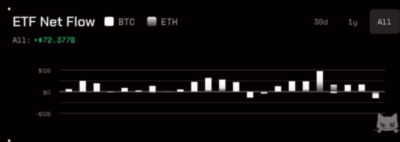
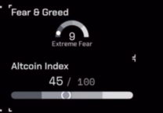
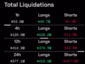
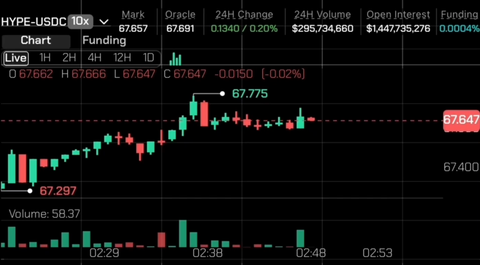
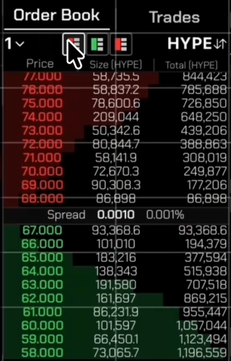
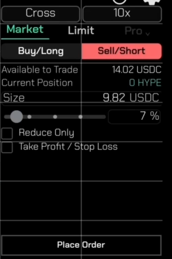
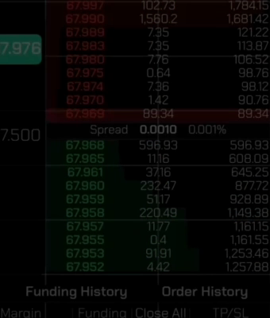
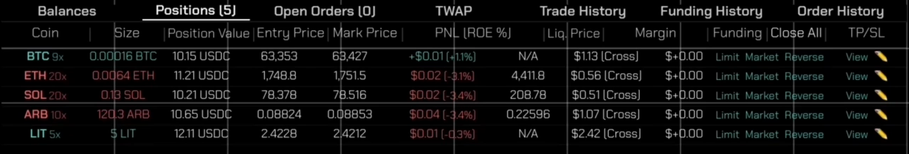

portfolio / riten
Eight loops and eight stills, cut from the recordings. The thesis of the page is the density: every instrument a desk would give you, on a screen you hold in one hand.
Cut from the first three seconds, the only stretch with the whole device in frame and no caption burned in. Played forward then backward so it loops seamlessly.
motion / the terminal
Each is cropped from the black-background recording with no caption in frame and no camera drift. Silent looping MP4, not GIF: same effect, full colour, a fraction of the weight.
The screen dims, the sheet rises on the right, and the trade is restated before you commit: Long to Short, same size, at market, with the new liquidation price. The best thing in the footage.
Instead of the blink. Tick size steps 0.001 to 0.002 to 0.01 and the ladder rebuilds itself around the spread each time. The blinking book is not in the footage: it only ever updates while the camera is panning.
Fills stacking as five positions are market-closed one after another. BTC sold at $63,832, ETH bought at $1,774, SOL at $79.24, ARB at $0.09. The position count ticks down behind it.
Live, 1H, 2H, 4H, 12H, 1D. The candles redraw and the volume histogram follows, with OHLC restated above the chart each time.
The slider drags from 7% to 14% of buying power, size follows from 9.81 to 19.63 USDC, and the limit price snaps to mid. Everything recalculating together.
The hero, repeated here for the set. Chart, book, ticket and positions all live at once, on one handset, with nothing to swipe between.
motion / the macro
Both cut at the moments you flagged. These are native size, which is as large as they can ever be shown.
Both are real interactions, not decoration. The stablecoin curve is being scrubbed: the dot walks back through Nov 14, 13, 12, 11, 10 and the headline figure follows it. The Fed widget opens a probability tooltip per date, breaking the December meeting into 50bps cut, 25bps cut, no change and a hike.
stills / the macro
Fear & Greed and the Altcoin Index are one crop, as you asked: they share a column in the app and they answer the same question.



This is the ceiling, not a first pass. The app is gone and the recording is 640 x 296, so these are shown above at their true size. The ETF chart is the only one large enough to anchor a section alone. The honest layout is a tight row of small tiles at 1x, not five big soft ones.
stills / the terminal
All from 32 seconds, native resolution. Useful as the reduced-motion fallbacks, and for anywhere a loop would be too much.




